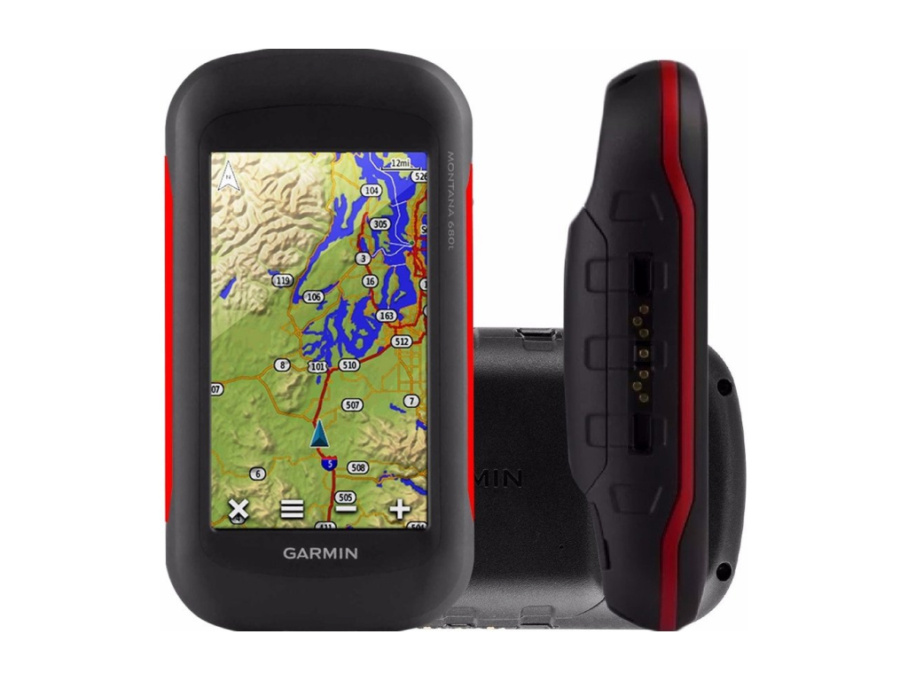
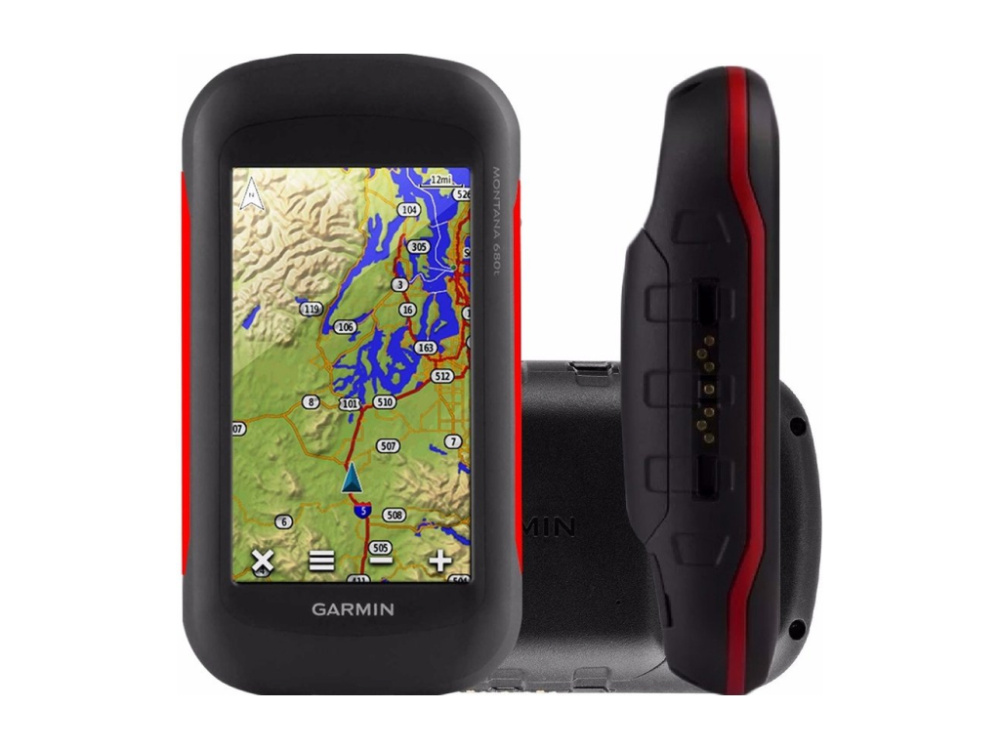

Tomar los puntos GPS es parte importante para el registro de los agricultores ya que nos permitirá tener los datos reales del tamaño total de la parcela y las áreas donde están los cultivos.
Anthoni nos explica en este video como funciona el equipo de GPS y como se toman los puntos en una parcela
 
